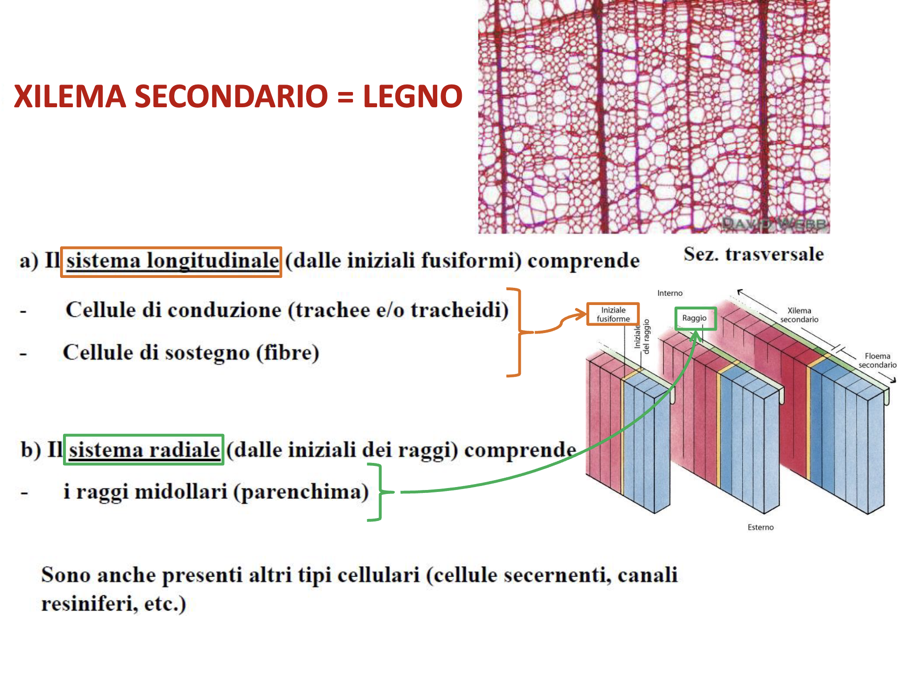

Definizione e Caratteristiche Generali
Accrescimento secondario: crescita in spessore (diametro) degli organi vegetali, complementare alla crescita primaria in lunghezza.
Meccanismo
- Responsabili: meristemi secondari (laterali)
- Localizzazione: lateralmente nel corpo della pianta
- Funzione: solo istogenesi (produzione tessuti, non organi)
Meristemi: Confronto Primari vs Secondari
| Caratteristica | Meristemi Primari | Meristemi Secondari |
|---|---|---|
| Posizione | Apici fusto e radice | Lateralmente nel corpo |
| Origine | Presenti nell’embrione | Cellule differenziate riattivate |
| Funzione | Organogenesi + Istogenesi | Solo Istogenesi |
| Crescita | Lunghezza (primaria) | Spessore (secondaria) |
| Prodotti | Nuovi organi + tessuti | Solo tessuti |
Corpo Primario vs Corpo Secondario
Definizioni
- Corpo primario: derivato esclusivamente da meristemi primari
- Esempio: piante erbacee
- Corpo secondario: include tessuti da meristemi secondari
- Esempio: piante arboree
Gradiente di Trasformazione
Distribuzione spaziale nella pianta:
- Vicino apice: organizzazione primaria
- Zone intermedie: struttura di transizione
- Regioni basali: organizzazione secondaria tipica
Distribuzione Tassonomica
Gruppi con Accrescimento Secondario
- Gimnosperme: tutte le specie
- Dicotiledoni: molte specie, specialmente arboree
- Monocotiledoni: generalmente assente (palme = accrescimento atipico)
Variabilità nelle Dicotiledoni
- Erbacee: spesso solo corpo primario
- Arboree: corpo secondario sviluppato
- Eccezioni: alcune specie erbacee di grandi dimensioni
I Due Meristemi Secondari
1. Cambio Cribro-Vascolare
Attività Cellulare
Divisioni periclinali (longitudinali):
- Parallele alla superficie dell’organo
- Risultato: aumento strati cellulari
- Destino cellule figlie:
- Una rimane nel cambio (iniziale)
- Una si differenzia:
- Verso interno: xilema secondario (legno)
- Verso esterno: floema secondario (libro)
Divisioni anticlinali (perpendicolari):
- Perpendicolari alla superficie
- Funzione: aumento circonferenza anello cambiale
- Compensazione: crescita in larghezza senza lacerazioni
Rapporto di Produzione
- Xilema : Floema ≠ 1:1
- Maggiore produzione xilema: funzione strutturale e di riserva

Legenda: C = Cellula iniziale, X = Xilema Secondario, P = Floema Secondario
Formazione del Cambio
Nel Fusto (Dicotiledoni e Gimnosperme)
Struttura di Partenza
- Organizzazione: eustelica con fasci collaterali aperti
- Processo bifasico:
Fase 1: Cambio Intrafasciale
- Origine: procambio residuo nei fasci collaterali aperti
- Localizzazione: tra xilema e floema primari
- Attività: produzione tessuto secondario locale
Fase 2: Cambio Interfasciale
- Origine: parenchima interfasciale riattivato
- Processo: acquisizione attività meristematica
- Risultato: anello cambiale continuo

Nella Radice
Struttura di Partenza
- Organizzazione: actinostelica (senza midollo)
- Doppia origine cambio:
- Procambio: tra arche xilematiche e floematiche
- Periciclo: strato sotto endoderma
Evoluzione Morfologica
- Forma iniziale: sinuosa (segue pattern stellare)
- Forma finale: anello regolare
- Transizione: progressiva scomparsa struttura stellare
Riconoscimento Microscopico
Fusto Secondario
- Midollo centrale: tessuto parenchimatico chiaro
- Anelli concentrici: xilema secondario (interno) + floema secondario (esterno)
- Cambio: linea sottile tra xilema e floema
- Elementi vascolari: vasi del legno e tubi cribrosi visibili
Radice Secondaria
- Assenza midollo: centro occupato da xilema primario stellare
- Floema primario: marginale o scomparso
- Crescita radiale: tessuti secondari dal cambio ad anello
- Strati esterni: suberificazione da cambio subero-fellodermico
Struttura dei Tessuti Secondari
Tipologie di Cellule Iniziali
Iniziali Fusiformi
- Morfologia: strette e allungate
- Prodotti: elementi verticali
- Xilema: trachee, tracheidi, fibre
- Floema: tubi cribrosi, cellule compagne
Iniziali dei Raggi
- Morfologia: corte e isodiametriche
- Prodotti: raggi midollari (trasporto laterale e riserva)
Sistemi di Organizzazione
Sistema Longitudinale
- Orientamento: cellule parallele all’asse
- Funzioni: conduzione e sostegno principali
Sistema Radiale
- Orientamento: cellule perpendicolari all’asse
- Funzioni: trasporto laterale, comunicazione, riserva
Xilema Secondario (Legno)
Composizione
- Sistema longitudinale: conduzione (trachee/tracheidi) + sostegno (fibre)
- Sistema radiale: raggi midollari (parenchima)
- Elementi opzionali: cellule secretrici, canali resiniferi
 
Differenze Tassonomiche
Gimnosperme
Sezione trasversale:
- Tracheidi di diametro uniforme
- Raggi midollari sottili (uniseriati)
- Aspetto omogeneo
Sezioni longitudinali:
- Elementi conduzione simili (tracheidi)
- Canali resiniferi caratteristici
- Punteggiature abbondanti
- Legno omoxilo (omogeneo)
Angiosperme
Sezione trasversale:
- Grande variabilità diametri (trachee grandi, tracheidi piccole)
- Raggi midollari larghi (pluriseriati)
- Legno eteroxilo (eterogeneo)
Confronto Riepilogativo
| Caratteristica | Gimnosperme | Angiosperme |
|---|---|---|
| Conduzione | Solo tracheidi | Trachee + tracheidi |
| Tipo legno | Omoxilo | Eteroxilo |
| Raggi midollari | Uniseriati | Pluriseriati |
| Canali specializzati | Resiniferi presenti | Variabili |
Dendrocronologia e Cerchie Annuali
Formazione Stagionale
Attività cambiale variabile:
- Legno primaverile: attività crescente
- Angiosperme: trachee grande diametro
- Gimnosperme: tracheidi diametro aumentato
- Legno estivo-autunnale: attività ridotta
- Elementi conduzione diametro ridotto
- Legno tardivo: attività minima
- Riduzione drastica diametri
- Formazione fibre sclerenchimatiche
Applicazioni
- Datazione: manufatti lignei, eventi storici
- Climatologia: ricostruzione condizioni ambientali passate
- Ecologia: stress ambientali, dinamiche forestali
Floema Secondario (Libro)
Sistema Longitudinale
Elementi di conduzione:
- Gimnosperme: cellule cribrose
- Angiosperme: tubi cribrosi + cellule compagne
Altri componenti:
- Fibre sclerenchimatiche: sostegno
- Cellule parenchimatiche: metabolismo
Disposizione alternata:
- Aree chiare = elementi conduzione
- Aree scure = fibre sclerenchimatiche
Sistema Radiale
Parenchima di dilatazione:
- Origine: iniziali dei raggi
- Continuità: con raggi midollari xilema
- Morfologia: forma a ventaglio
- Funzione: compensazione spazi da crescita diametrale
Esempio: Fusto di Tiglio
Significato Funzionale
- Problema: anelli floema spinti verso esterno (diametro maggiore)
- Rischio: lacerazioni strutturali
- Soluzione: parenchima dilatazione colma spazi
- Risultato: integrità strutturale e protezione
2. Cambio Subero-Fellodermico (Fellogeno)
Origine e Attività
- Origine: cellule parenchimatiche corteccia (subepidermiche)
- Attivazione: riacquisizione attività meristematica
- Divisioni periclinali:
- Verso interno: felloderma (tessuto vivo)
- Verso esterno: sughero (cellule morte)
Periderma
Composizione: felloderma + fellogeno + sughero Funzione: rivestimento secondario sostitutivo epidermide
Sughero
- Pareti: impregnate suberina (idrofoba)
- Stato vitale: cellule morte
- Proprietà: impermeabilità gas e liquidi
- Funzione: protezione chimico-fisica
Felloderma
- Stato vitale: tessuto vivo
- Funzione: trasporto nutrienti verso fellogeno e sughero
Funzioni Generali
- Compensazione: aumento diametro organo
- Sostituzione: epidermide inadeguata per strutture secondarie

Formazione Multipla
Caratteristica distintiva: formazione ricorrente
- Differenza: cambio cribro-vascolare = formazione unica
- Localizzazione: nuovi fellogeni sempre più interni
- Limitazione: mai sopra strati sughero (cellule morte)
Ritidoma (Scorza)
Composizione
- Strati esterni: tessuti morti isolati dal sughero
- Struttura: multistrato complesso
- Dinamica: sfaldamento continuo
Funzioni
- Autopulizia: rimozione parassiti ed epifite
- Protezione: barriera fisica e chimica
- Identificazione: carattere tassonomico importante
Lenticelle
Struttura e Funzione
- Natura: aperture nel periderma
- Funzione: scambi gassosi
- Cellule: grandi e tondeggianti
- Controllo: semplice, non regolato come stomi
Dinamica Stagionale
- Periodo attivo: scambi gassosi normali
- Fine stagione: formazione sigillo suberificato
- Ripresa: rottura sigillo stagione successiva
Riconoscimento
- Visibilità: ciliegio, betulla (aspetto a righe)
- Distribuzione: variabile tra specie
- Importanza: diagnostica e fisiologica
Significato Evolutivo e Ecologico
Vantaggi Adattivi
- Supporto meccanico: organi di grandi dimensioni
- Efficienza conduzione: maggior volume tessuti vascolari
- Protezione: periderma vs epidermide
- Longevità: strutture perenni resistenti
Correlazioni Ambientali
- Climi stagionali: cerchie annuali evidenti
- Stress ambientali: modificazioni anatomiche
- Strategie ecologiche: crescita in altezza vs diametro
- Competizione: accesso risorse luminose
Applicazioni Pratiche
- Selvicoltura: gestione foreste produttive
- Arboricoltura: cura alberi ornamentali
- Tecnologia: utilizzazione legno e sughero
- Ricerca: indicatori ambientali e climaticiMeristemi secondari → attività dipleurica cioè possono produrre nuovi tessuti su entrambi i lati → Nel cambio si traduce in parte interna Xilema Secondario ed esterna Floema secondario
C = Cellula iniziale / X = Xilema Secondario / P = Phloem Secondario (Floema)
🧱 Passaggio da struttura primaria e struttura secondaria nel fusto e nella radice
Nel fusto (dicotiledoni, gimnosperme):
- Fusto in struttura eustelica con fasci collaterali aperti
- 2 fasi:
- Cambio intrafasciale: origina dal procambio già presente dentro i fasci collaterali aperti (primari), tra xilema e floema.
- Inizia a produrre tessuto secondario verso l’interno e l’esterno.
- Cambio interfasciale: origina dal parenchima differenziato situato tra un fascio e l’altro (interfasciale), che riacquista attività meristematica.
- I due cambi, unendosi, formano un anello continuo di cambio cribro-vascolare, capace di produrre tessuto conduttore secondario lungo tutta la circonferenza del fusto.
- Cambio intrafasciale: origina dal procambio già presente dentro i fasci collaterali aperti (primari), tra xilema e floema.
Nella radice:
- Struttura actinostelica (niente midollo)
- 2 origini:
- Procambio tra arche xilematiche e floematiche
- Periciclo (sotto endoderma)
- Forma iniziale del cambio = sinuosa, diventa ad anello con l’attività iniziale → produce più xilema secondario
Nella zona di transizione (tra radice primaria e radice secondaria): si osserva la progressiva scomparsa della struttura a stella e la formazione del cilindro centrale regolare.
🧪 Riconoscimento microscopico
- Fusto secondario:
- Presenza di midollo centrale, chiaro e parenchimatoso.
- Anelli concentrici di xilema secondario lignificato (più interno) e floema secondario (più esterno).
- Il cambio appare come una linea sottile tra i due.
- Talvolta visibili i vasi del legno (grossi e chiari) e i tubi cribrosi.
- Radice secondaria:
- Assenza di midollo: il centro è occupato da xilema primario a stella.
- Il floema primario è visibile solo ai margini del cilindro centrale o può scomparire.
- I tessuti secondari (xilema e floema) crescono in modo radiale a partire da un cambio ad anello.
- Si possono riconoscere strati suberificati all’esterno, provenienti dal cambio subero-fellodermico.
🧱 Formazione e caratteristiche di xilema e floema secondari
Cribro-vascolare è formato da due tipologie di cellule iniziali:
- Iniziali fusiformi:
- strette e allungate
- producono elementi verticali dello xilema e floema
- trachee,
- tracheidi,
- fibre,
- tubi cribrosi
- Iniziali dei raggi:
- corte e isodiametriche
- producono cellule dei raggi midollari (parenchima a orientamento radiale) per trasporto laterale e riserva.
Sistema longitudinale
- Cellule allineate lungo l’asse del fusto
- Da qui:
- Xilema: trachee/tracheidi, fibre sclerenchimatiche
- Floema: elementi cribrosi, cellule compagne/albuminose, fibre sclerenchimatiche
Sistema radiale
- Cellule disposte radialmente (90° rispetto al longitudinale)
- Origina:
- Raggi midollari (xilema)
- Parenchima di dilatazione (floema)
Xilema e Floema secondari
Xilema e Floema secondari → caratterestiche simili ai primari, si organizzano in maniera diversa.
Xilema Secondario (Legno)
Struttura
- Più abbondante, visibile in sezioni trasversali
- Sistema longitudinale: conduzione (trachee/tracheidi) + sostegno (fibre)
- Sistema radiale: raggi midollari (parenchima)
- Opzionali → altri tipi cellulari → es. cellule con attività secernente o canali resiniferi
Cosa osserviamo in sezione
Gimnosperme
Sezione Trasversale:
- taglio perpendicolare all’asse dell’organo
- faccia superiore blocchetto di legno
- si osserva:
- sistema longitudinale xilema secondario
- diametro tracheidi
- file di cellule → raggi midollari Sezione longitudinale:
- sistema longitudinale xilema secondario
- taglio parallelo all’asse lungo
- facce laterali
- sezione radiale se: apprezzo altezza, lunghezza e sviluppo radiale
- sezione tangenziale: se apprezzo altezza, lunghezza ma non sviluppo radiale
- elementi di conduzione: più o meno tutti uguali (tracheidi),
- canali resiniferi (cellule parenchimatiche secernenti resina, gimnosperme)
- abbondanti punteggiature tra le tracheidi: aspetto omogeneo → legno omoxilo
- raggi midollari: uniseriati molto sottili
Angiosperme
Sezione Trasversale:
- Grande differenza di diametro con le gimnosperme negli elementi di conduzione
- trachee grandi, tracheidi piccole
- legno eterogeneo → quindi eteroxilo
- raggi midollari plutiseriati → formati da più fili di cellule
Confronto riepilogativo tra Gimnosperme e Angiosperme
| Caratteristica | Gimnosperme | Angiosperme Dicotiledoni |
|---|---|---|
| Conduzione | Solo tracheidi (fibrotracheidi) | Trachee + tracheidi |
| Legno | Omoxilo (omogeneo) | Eteroxilo (eterogeneo) |
| Raggi midollari | Uniseriati | Pluriseriati |
| Canali | Resiniferi presenti | Variabili |
Dendrocronologia - Cerchie Annuali
- Per cosa sono utili → datazione manufatti, ricostruzione condizioni climatiche
- Dove li troviamo → Nelle piante in climi stagionali
- Cambio cribro-vascolare → attività non costante
- → legno primaverile → attività in aumento (stato vegetativo) → angiosperme incremento diametro trachee, gimnosperme incremento diametro fibrotrachee
- → legno estivo-autunnale → attività metabolica ridotta → gli elementi di conduzione riducono il diametro per ridurre la portata → legno tardo autunnale (legno di chiusura) → si riduce ulteriormente attività metabolica (es. latifoglie perdono le foglie) → riduzione drastica diametro elementi di conduzione, si formano fibre sclerenchimatiche (sostegno)
- Il cambio si ferma → ripartirà alla prossima stagione vegetativa
- Cambio cribro-vascolare → attività non costante
- Sia per Xilema che Floema secondario → gli anelli più giovani sono quelli più vicini al cambio cribrio-vascolare
Floema Secondario (Libro)
valgono le stesse regole dello xilema secondario
Sistema longitudinale
- Costituito da cellule parallele all’asse del fusto
- Elementi:
- Elementi di conduzione:
- Cellule cribrose (Gimnosperme)
- Tubi cribrosi + cellule compagne (Angiosperme)
- Fibre sclerenchimatiche: cellule morte con pareti lignificate → funzione di sostegno
- Cellule parenchimatiche
- Elementi di conduzione:
- Disposizione alternata:
- Aree chiare = elementi di conduzione
- Aree rosse = fibre sclerenchimatiche
Sistema radiale
- Parenchima di dilatazione:
- Deriva dalle iniziali dei raggi
- In continuità con raggi midollari dello xilema
- Cellule parenchimatiche in divisione continua
- Forma a ventaglio → colma spazi creati dalla spinta verso l’esterno degli anelli vecchi
Fusto di tiglio in struttura secondaria
Significato del Parenchima di Dilatazione
- Il cambio lavora verso l’esterno → anelli di floema vengono spinti in regioni a diametro maggiore
- Rischio di lacerazioni → il parenchima di dilatazione previene le fratture colmando gli spazi
- Essenziale per mantenere l’integrità strutturale e proteggere da agenti esterni
2. Cambio Subero-Fellodermico (Fellogeno)
Origine e Attività
- Deriva da cellule parenchimatiche della corteccia (subepidermico)
- Cellule tornano a dividersi → divisioni periclinali
- Ogni divisione genera:
- Verso l’interno: Felloderma (tessuto parenchimatico, vivo)
- Verso l’esterno: Sughero (cellule suberificate, morte)
- Il complesso felloderma + fellogeno + sughero forma il periderma (rivestimento secondario)
Sughero
- Pareti impregnate di suberina (idrofoba)
- Cellule morte → impermeabilità a gas e liquidi
- Funzione: protezione chimico-fisica del corpo secondario
Felloderma
- Tessuto vivo → trasporto nutrienti verso fellogeno e sughero in formazione
Funzioni del cambio subero-fellodermico
- Compensa l’aumento di diametro della pianta
- Sostituisce l’epidermide, troppo fragile per organi secondari
Formazione Multipla
- A differenza del cambio cribro-vascolare, si forma più volte
- Nuovi fellogeni si formano più internamente, mai sopra strati di sughero (cellule morte)
Ritidoma (Scorza)
- Formato da strati esterni morti, isolati dal sughero
- Tessuto multistrato complesso
- Si sfalda → funzione di “autopulizia” (rimozione parassiti, epifite)
- Aspetto variabile tra specie → importanza tassonomica
Lenticelle
- Aperture nel periderma → scambi gassosi
- Formate da cellule grandi e tondeggianti
- Semplici, non regolate come gli stomi
- Visibili in ciliegio, betulla (aspetto a righe)
- Alla fine della stagione: formazione di sigillo suberificato, rotto l’anno successivo